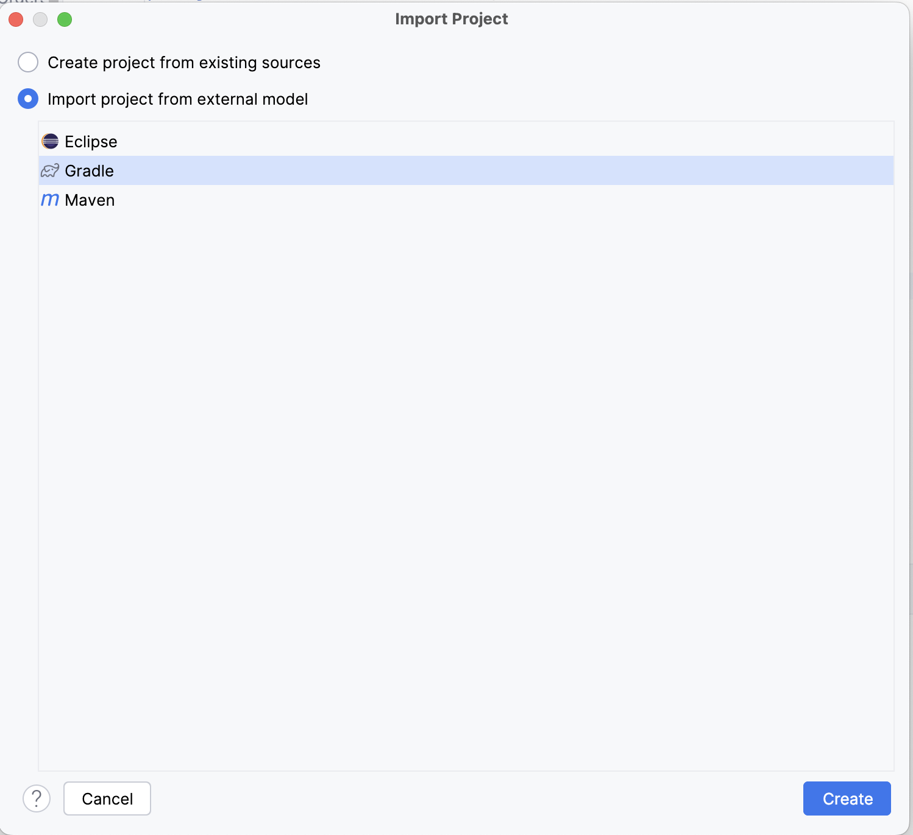
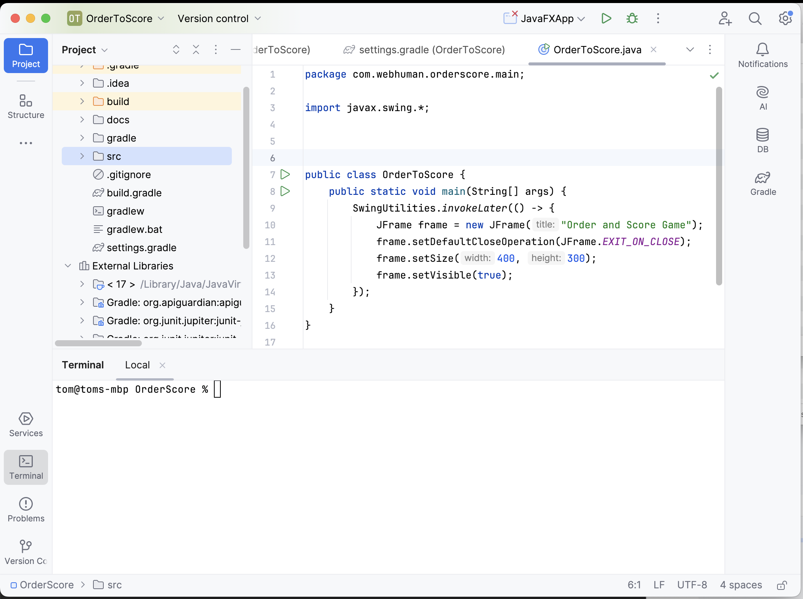
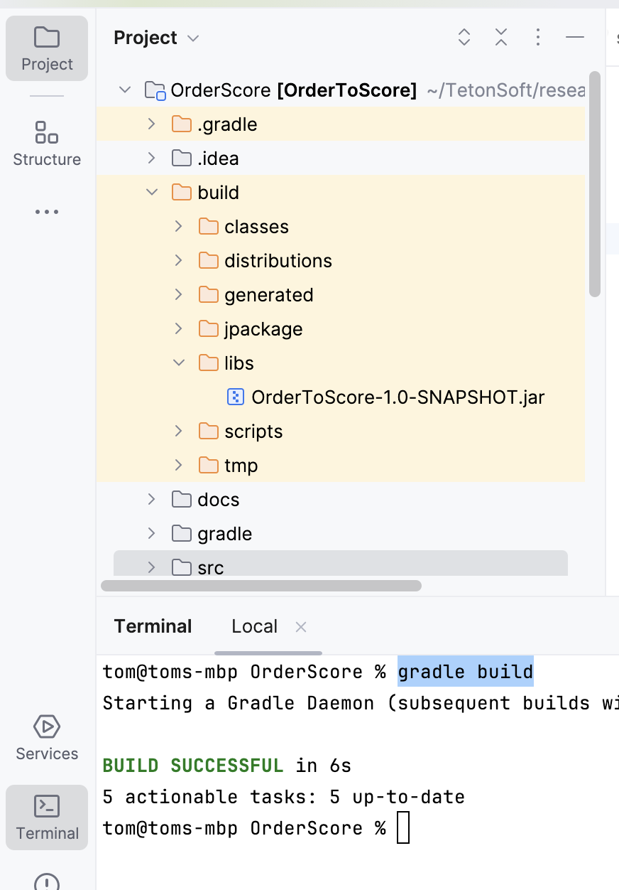
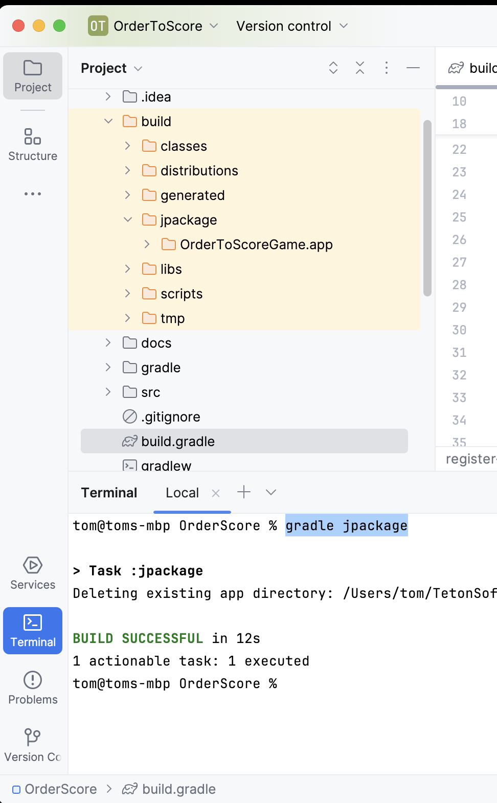

Set up OrderScore
Install Java 17 or later
- Download Java
- Open a termail and run java -version to make sure java is installed properly
Install Gradle
- Download Gradle
- Open a termail and run gradle -version to make sure gradle is installed properly
Clone the project from GitHub
- Open a termial, cd to the folder you want to store the project
- run this in the termial
clone https://github.com/christylaminated/orderScore.git
Import the project to IntelliJ
- Run IntelliJ, File -> New -> Import from Existing sources...
- Choose Import project from external model and pick Gradle in the list. Then click Create

- It should look like this

- Click on Gradle on the right, then right click "OrderToScore" , choose Reload Gradle Project to download the dependence for the project
- public static void main is in com.webhuman.orderscore.main.OrderToScore.java
Build the project
- Click on Termial on the left to open a Termial within IntelliJ.
- Run "gradle build" to build the project. It should genrate the jar in build/libs/OrderToScore-1.0-SNAPSHOT.jar

- Run "gradle jpackage" to genrate the .app in build/jpackage/OrderToScoreGame.app

OrderToScoreGame.app is a macOS executable file that can be distributed to users. Simply double-clicking the file will launch the application.